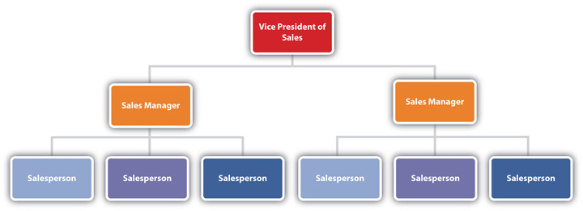
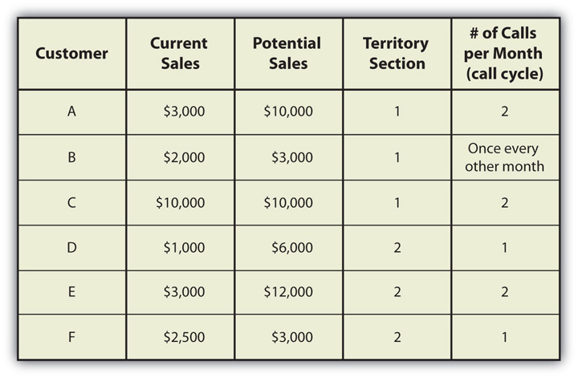
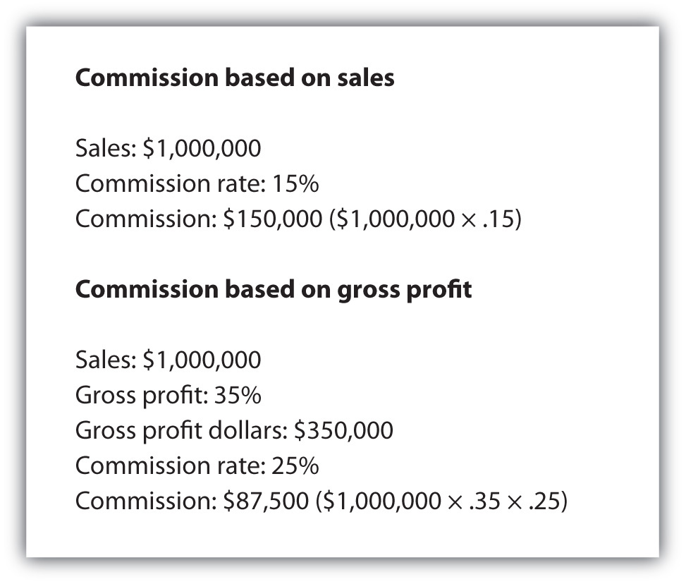

Meet Priya Masih. Priya has been in sales for five years with experience in the telecommunications, insurance, and pharmaceutical industries. She is currently a sales representative at Lupin Pharmaceuticals. She has learned how to manage herself, her time, and her results for a successful career in sales. But it’s not always easy. One of the biggest challenges of being successful in sales is to stay motivated, even when you don’t make the sale.
Priya shares how she stays motivated to achieve new heights every day.
(click to see video)So imagine that you landed your dream job in sales, you’ve been to the corporate office for training and orientation, you’ve set up your home office, and you’ve picked up your company car—now what?
Sales is a challenging, exhilarating, demanding, and rewarding profession. You want to be successful and enjoy what you do, but you really haven’t had a chance to focus on the actual job between graduation and job interviews. Here’s your chance to look ahead to how you learn the day-to-day activities that go on in the profession of selling, identify the resources to help you be a partner to your customers, and bring success to yourself and your company. It sounds like a tall order, but it’s easy when you have people to guide and support you.
No matter what job you have or what company you sell for, you can and should be an “A-Player.” That means being the best at what you do. You don’t have to be a celebrity or a person who went to Harvard, according to blogger Auren Hoffman in her April 2009 post “The A-Player Janitor”: “An ‘A-Player’ by definition is incredibly productive and smart and has that ‘it,’ that rockstar-esque factor that makes everyone want to work with her.”Valeria Maltoni, “How Do You Become an A-Player?” Social Media Today, April 17, 2009, http://www.socialmediatoday.com/SMC/85675 (accessed September 4, 2009). Her point is that hiring managers want to hire the best person for every job. So you don’t have to be an A-Player in everything, just be an A-Player in the one thing you do best.Auren Hoffman, “The A-Player Janitor,” Summation Blog, April 9, 2009, http://blog.summation.net/2009/04/the-aplayer-janitor.html (accessed September 4, 2009). Find your sweet spot and focus on it. In sales, being an A-Player means connecting with customers. You might be surprised to learn what makes someone an A-Player in sales according to this video.
“The best part of a career in sales is that it is undefined,” according to Ann Devine in a recent article on The Black Collegian Online.Ann Devine, “Is a Career in Sales Right for You?” The Black Collegian, http://www.black-collegian.com/career/career-reports/sales-grad05.shtml (accessed August 19, 2009). Every day is completely different; some days you will be researching leads, and other days you might be making a presentation to a prospective customer. This exciting, unstructured, and sometimes unpredictable environment rarely gets boring. But it’s this lack of structure that can present a challenge in choosing priorities and accomplishing goals. Those who are successful realize how to manage themselves and their time and use the resources that are available to them from their company, their colleagues, and their community.
You might be wondering what managing yourself means. When you are in sales, one of the most important jobs you have is being sure that you have clear direction about what you want to accomplish and what you need to do to get there. Even though you are used to managing yourself and your time at school, it can be a daunting task to be responsible for calling on customers and generating sales, especially if you are based in a location remote from the company office such as your home office. So first things first—identify your resources. Even though you’re traveling solo, you are not alone.
A great salesperson starts with great habits. Here are a few tips from Richard E. Goldman, author of Luck by Design: Certain Success in an Uncertain World.
One of the best ways to learn the ropes and get the inside track is to go on ride-alongs (also referred to as shadowing) with colleagues, traveling with an experienced sales rep or sales manager to make sales calls. The video ride-alongs at the start of each chapter are a virtual way for you to get some powerful insights from experienced sales professionals. Sometimes a ride-along is included in the interviewing process; it’s an opportunity for you to experience firsthand exactly what the job entails and for the company to see how you react in the selling environment before you get a job offer. Other times a ride-along is an training opportunity that takes place after you’ve been hired. Either way, always take advantage of as many opportunities as you can to ride-along with experienced salespeople. There are some tips that will help maximize your ride-along experience.
Virtual Ride-Along
Go on a virtual ride-along with a Pfizer pharmaceutical sales rep by reading this article.
http://www.e-shadow.com/interview-with-a-phizer-pharmaceutical-rep
Virtual Ride-Along
Go on a virtual ride-along with a TD Ameritrade investment consultant by reading this article.
http://www.e-shadow.com/interview-with-a-td-ameritrade-investment-consultant
Many salespeople don’t realize that their sales managerPerson to whom a salesperson reports and who is accountable for delivering on sales goals. (i.e., the person to whom they report) is ultimately responsible for delivering the company’s sales goals. As such, the sales manager wants to do everything he can to help his salespeople be successful. Even before you start your job, it’s a good idea to touch base with your sales manager. Chances are you interviewed with him, so you probably have his contact information. A good way to get off to a great start is to send him a handwritten thank-you note after you’ve accepted the position. What better way to start a new relationship than with a personal note.
Your sales manager can be your most important source of company information as well as customer insights. He had a lot of experience selling before he became a sales manager, and he would likely share his insights to help you be successful. Not only can he make your job (and your life) easier, he can teach you a lot about selling. It’s always a good idea to keep your sales manager updated with the status of your customers and prospects. He will appreciate your proactive and regular updates about the standing of each lead and customer in addition to your regular one-on-one meetings, staff meetings, or conference calls.
Sometimes new salespeople are nervous about asking questions of their sales managers, which is natural. It’s best to remember that your sales manager doesn’t expect you to know everything. Your questions show him that you are interested in learning more about the business from him and help him identify what areas would be most beneficial for coaching. Your sales manager can be a part of your success story. Ask questions, ask his opinion, keep him in the loop, help make him look good, and you will have a relationship that works and grows.
Just as communication is important with customers, it is critical to building your relationship with your sales manager. He probably has a span of controlThe number of people that report to one manager., or the number of people reporting to him, ranging from a two to twenty or more people. It’s important to understand the organizational structure of a sales department. While each company is different, the basic structure of a selling organization is shown in Figure 14.2 "Sales Department Organization Chart". In some companies, salespeople may be responsible for a city or cities, region, or other geographic area. This is called territory managementOrganizational strategy whereby salespeople are responsible for a designated geographic area such as a city or cites, state, or region.. In this case, salespeople, usually called territory managersSalesperson that is reponsible for the customers in a designated geographic area., are responsible for the customers in their specific geographic area. This organizational strategy helps minimize the amount of travel time between customers.
Figure 14.2 Sales Department Organization Chart
In other companies, salespeople may be responsible for specific brands, products, or product categories. In the case of food manufacturers, these categories might be noncarbonated beverages, prepared meals, or dairy products. In the professional services arena, the organization might be vertical, such as retail sales, financial services, or health care. This product or category approach may require salespeople to travel to customers in various parts of the country based on the needs of the customers. It requires the salesperson to develop expertise in a specific product or discipline. These sales positions may have titles such as account manager, product manager, or sales rep. The different types of sales positions are discussed in more detail in Chapter 2 "The Power to Choose Your Path: Careers in Sales".
The company you work for, whether it is large or small, has resources. A laptop, the customer relationship management (CRM) system, your expense account, the company owner, the human resources department, accounts receivable department, and others are all resources that can help you do your job. Take the time to explore all the resources when you start with the company. In larger companies, you will most likely participate in an orientation session or process frequently referred to as onboardingEmployee orientation process or method for a new employee to learn about company practices, policies, and procedures. to learn about how the company operates and how your can take advantage of resources to help you do your job. In a small company, the process is less formal and requires you to be more proactive about understanding what’s available. Either way, it’s your responsibility to explore and understand your resources. Remember that all the skills you use when you are communicating with customers are the same when you are communicating inside your company: build lasting relationships that are mutually beneficial. While every company is different, here are some internal resources that are available in most companies.
School of Hard Rocks
Imagine going to employee orientation and getting the employee handbook that looks more like a comic book than a manual. That’s how Hard Rock Café onboards its mostly millennial sales force of wait staff and other support roles during its one-day orientation. Jim Knight, senior director of training and development, completely revamped the company’s School of Hard Rocks corporate university. Knight used comic books as his inspiration and got employees involved in telling the Hard Rock Café story; all the illustrations and photos in the handbook were done by Hard Rock employees. The results are impressive: employee turnover rate is now fifty-five points lower than that of the industry.
Besides using company resources, it’s also important for you to stay on top of changes in technology, not only to be effective but also to redefine practices. In fact, Helen Hast, a professor at the Harvard Graduate School of Business, has identified managing technological change as of the five core competencies for the twenty-first century. According to a recent article on BNET, she said, “When we have a new tool, we first use it for what we are already doing, just doing it a bit better. But gradually, the new tool changes the way we do things.”Sean Silverthorne, “5 Personal Core Competencies for the 21st Century,” BNET, August 13, 2009, http://blogs.bnet.com/harvard/?p=3332&tag=nl.e713 (accessed August 19, 2009).
While resources are important for you to be effective in sales, it’s resourcefulness that will make you successful.Tony Robbins, “Tony Robbins: Why We Do What We Do and How We Can Do It Better,” video, January 16, 2007, http://www.youtube.com/watch?v=Cpc-t-Uwv1I (accessed September 5, 2009). Think about it: Evan Williams, Biz Stone, and Jack Dorsey figured out a way to make Twitter—the microblogging site they founded in March 2006—one of the most popular Web sites in the world without the use of traditional advertising to spread the word.Ashton Kutcher, “The Twitter Guys: The 2009 Time 100,” Time, http://www.time.com/time/specials/packages/article/0,28804,1894410_1893837_1894156,00.html (accessed September 5, 2009).
It would be hard to argue that Williams, Stone, and Dorsey had all the resources they needed to launch this hugely successful Web site; they had no money for advertising, or anything else for that matter. But they were resourceful about getting people to try their new service, use it, and engage with it. While you might not invent the next Twitter, you can certainly sell the next big idea by using your resources and being resourceful.
Depending on the type of business you are in and the company you work for, you might have as few as one customer and as many as a hundred or more. You might be wondering how you determine which customers to call on each day, how much time should be spent on prospecting versus calling on existing customers, how much time should be devoted to nonselling activities such as travel, paperwork, and internal meetings. While there is no hard-and-fast answer to these questions, your goal should be to spend as much time as possible with customers or prospects. It’s impossible to sell if you are not in front of a customer.
Consider this: Salespeople spend approximately fourteen hours a week engaged in face-to-face selling. That means that 70 percent of the time, in an average forty-six-hour workweek, salespeople are doing something other than face-to-face selling.Gerald L. Manning, Barry L. Reece, and Michael Ahearne, Selling Today: Creating Customer Value (Upper Saddle River, NJ: Pearson Prentice Hall, 2010), 31. See Figure 14.3 "Activities of Salespeople in an Average Workweek" for a complete breakdown of activities.
Figure 14.3 Activities of Salespeople in an Average WorkweekData from Gerald L. Manning, Barry L. Reece, and Michael Ahearne, Selling Today: Creating Customer Value (Upper Saddle River, NJ: Pearson Prentice Hall, 2010), 31.

Since your objective is to spend as much time as possible with customers, you’ll need to balance where you physically spend your time and with which customers you spend it. This is where territory management strategies come into play. Based on the call cycleThe frequency at which you call on each of your customers (e.g., once every twenty days)., the frequency at which you call on each of your customers, and where each is located, you’ll develop a plan to call on your existing customers and allow time for prospecting. In other words, you will need to have a plan to invest your time wisely to meet your goals.
To plan your sales calls, you’ll need a map (Google maps or MapQuest) and sales and potential sales information by customer (your company CRM system should include some, if not all, of this information), and your call cycle. Identify the location of each of your customers with a red dot or push pin. Then, divide your territory into sections by geography (designated as one, two, three, etc.), this can become the basis of your territory management plan. Review your customer data, including current sales and potential sales, to organize and prioritize your customers and calls. Figure 14.4 "Territory Management Worksheet" includes an example of a territory management worksheet.
Figure 14.4 Territory Management Worksheet
Based on this, you would plan your route so that you are making calls in one section of your territory on a given day, then covering another section on another day. This will ensure that you regularly visit your best customers and those with the most potential for growth, minimizing your travel time. While this might seem like a lot of work to do, it will save you time in the long run and help you increase your sales…and your income.
I am definitely going to take a course on time management…just as soon as I can work it into my schedule.
Louis E. Boone
If you’ve ever felt this way, it’s time to focus on time managementThe practice of organizing and prioritizing your activities to ensure that you can achieve your goals.. Salespeople get paid on results, not on the number of hours worked. As a salesperson, there are so many demands on your time: client needs, internal meetings, follow-ups, proposals, phone calls, e-mails, text messages, and the emergency du jour. All these can be time thieves, or activities that literally steal your time away from selling. You can easily fill your days with demanding tasks like these that really do not bring value to customers or ultimately close sales. Keep in mind that according to renowned sales consultant and motivational speaker Zig Ziglar, “Nothing happens until someone sells something.”Ann Devine, “Is a Career in Sales Right for You?” The Black Collegian, http://www.black-collegian.com/career/career-reports/sales-grad05.shtml (accessed August 19, 2009). To understand how to avoid getting caught up in the daily sea of details, it’s a good idea to realize why these interruptions and administrative demands consume your day. Here are three key reasons that time can get away from you:
While there are many theories on the best way to manage yourself and your time, one of the best resources is The Seven Habits of Highly Effective People by best-selling author and management expert Stephen R. Covey. The book is based on seven principles that appear to be simple, but provide a framework to make you more efficient, effective, and successful.
Covey’s philosophy has been embraced by so many that his consulting firm, FranklinCovey, advises thousands of people and companies around the world. His time management and personal planning tools are very popular with a loyal following. You can learn more about Stephen Covey and his philosophy at http://www.franklincovey.com/tc.
Don’t Waste My Time
If you think your time is valuable, think about how valuable your customer’s time is. When your customer thinks that doing business with you helps her save time, it can be a reason she won’t do business with anyone else. Ask Marcia F. Borello, who sings the praises of BankAtlantic in Tampa, Florida: “I do my banking exclusively at BankAtlantic because I save so much time. At so many other banks, I waste my precious free time in my lunch hour waiting in long lines hurrying to make my banking transactions before the bank closes at 4 pm. BankAtlantic’s long hours and seven day service make it convenient for me to do my banking when I choose to.”Marcia F. Borello comment, Bank Atlantic, https://www.bankatlantic.com/Customerfeedback/default.html (accessed September 13, 2009).
The moral of the story is that when you save time and save your customer’s time, you get more business.
Selling is all about making things happen. According to Ray Silverstein, “When you’re selling, time is your most valuable asset.”Ray Silverstein, “Time Management for Sales Pros,” Entrepreneur, March 20, 2007, http://www.entrepreneur.com/management/leadership/leadershipcolumnistraysilverstein/article176034.html (accessed September 5, 2009). But sometimes salespeople can get sidetracked doing tasks that don’t really generate sales. Here are the top three time-wasters:
Being successful in sales doesn’t require working longer hours; it requires taking control.Tom Metcalf, “3 Steps to Better Time Management for Sales Reps,” Sales Reps, Increase Your Productivity! Blog, January 3, 2007, http://telenotes.blogspot.com/2007/01/3-steps-to-better-time-management-for.html (accessed May 16, 2010). Time management is all about taking control of your time, your life, and your results. Here are six road-tested tips for effective time management that you can use for school and in sales:
1. Get organized.Doug Dvorak, “How to Use Time Management to Become a More Successful Sales Professional!” EzineArticles, http://ezinearticles.com/?How-to-Use- Time-Management-to-Become-a-More-Successful-Sales-Professional!&id=1081316 (accessed September 6, 2009). Get all the right tools to do your work efficiently and effectively. Be sure your work space is adequate with appropriate light, get file folders for each subject, organize your electronic files by folder, and choose a naming convention (e.g., customer name_topic_date) so it will be easier to find files that may have been saved to the wrong folder.Margot Carmichael Lester, “5 Ways to Get and Stay Organized” SalesHQ.com, http://www.saleshq.com/training/articles/1353-5-ways-to-get-and-stay-organized (accessed September 6, 2009).
Consider using a time management product to help you stay organized. Franklin Covey offers a world-renowned planning system at http://shopping.franklinplanner.com/shopping/index.jsp?. Day-Timer also offers paper and electronic options (including iPhone apps) for planning at http://www.daytimer.com. In addition, Microsoft Outlook and other e-mail programs offer excellent tools to help you organize and plan your time.
2. Set goals for the day, week, month, and year. If you don’t know what you expect to accomplish, you’ll never know if you get there. Write down the goals you want to accomplish every day in a to-do list; it’s a good idea to write down your goals at the end of the day for the next day.Doug Dvorak, “How to Use Time Management to Become a More Successful Sales Professional!” EzineArticles, http://ezinearticles.com/?How-to-Use- Time-Management-to-Become-a-More-Successful-Sales-Professional!&id=1081316 (accessed September 6, 2009). Invest fifteen minutes at the end of every day to plan for the next day.Jim Meisenheimer, “25 Ways to Get Motivated to Start Selling More,” EvanCarmichael.com, http://www.evancarmichael.com/Sales/407/25-Ways-To-Get-Motivated-To-Start-Selling-More.html (accessed August 19, 2009). Take the time to write down your goals for the coming week, Sunday night is a good time to do this. Be clear and realistic about what you want to accomplish and by when.
Time Is Money
(click to see video)Hear how Andrew Sykes, pharmaceutical sales specialist whom you met in the video ride-along in Chapter 5 "The Power of Effective Communication", manages his time.
3. Prioritize your activities. Now that you have created your action plan, or to-do list, review it and reorder it to put the most important things first. Focus your time on the most important activities.“How Good Is Your Time Management?” Mind Tools, http://www.mindtools.com/pages/article/newHTE_88.htm (accessed September 6, 2009). Lee Iacocca, the former CEO of Chrysler, said it best: “If you want to make good use of your time, you’ve got to know what’s most important and then give it all you’ve got.Donald Latumhahina, “Time Quotes: 66 Best Time Management Quotes,” Life Optimizer Blog, March 8, 2007, http://www.lifeoptimizer.org/2007/03/08/66-best-quotes-on-time-management (accessed August 19, 2009). In other words, do important and challenging things first.
Sometimes people think it’s best to do a lot of small things first so that you can scratch them off your list. But it’s best to take on more challenging things when you are fresh and leave the smaller things for later or when you have a few minutes in your day.
4. Create a schedule. Using your to-do list as a guide, put times to your activities so that you can identify the amount of time it will take to accomplish each one. Also, during the day this schedule will serve as a guide and help keep you on track. And “manage minutes” effectively; use travel time, waiting time, and other downtime to return phone calls and e-mails or to think about solutions for customer problems.Margot Carmichael Lester, “5 Ways to Get and Stay Organized” SalesHQ.com, http://www.saleshq.com/training/articles/1353-5-ways-to-get-and-stay-organized (accessed September 6, 2009). Include addresses, phone numbers, and e-mail addresses for each person you need to contact if they are not already in your address book. This will help save time and prevent distractions.Jim Meisenheimer, “25 Ways to Get Motivated to Start Selling More,” EvanCarmichael.com, http://www.evancarmichael.com/Sales/407/25-Ways-To-Get-Motivated-To-Start-Selling-More.html (accessed August 19, 2009).
5. Delegate work to others. Although you might be working independently, chances are there are other people in the company that can help with certain activities. Clerical and administrative tasks should be delegated to your assistant or other support person. Always thank someone (subordinate, colleague, family member) who helps you get your work done.Doug Dvorak, “How to Use Time Management to Become a More Successful Sales Professional!” EzineArticles, http://ezinearticles.com/?How-to-Use- Time-Management-to-Become-a-More-Successful-Sales-Professional!&id=1081316 (accessed September 6, 2009). Delegation is the true secret to success: a survey conducted by Watson Wyatt shows that high-performing salespeople spend 30 percent less time on administrative tasks than the low performers.Doug Dvorak, “How to Use Time Management to Become a More Successful Sales Professional!” EzineArticles, http://ezinearticles.com/?How-to-Use- Time-Management-to-Become-a-More-Successful-Sales-Professional!&id=1081316 (accessed September 6, 2009).
6. Maximize selling time. Your objective should be to spend as much time as possible in front of customers; it’s practically impossible to sell anything if you’re not talking to and learning about your customers.Shane Gibson, “How to Operationalize Your Selling Strategy,” SalesHQ, http://www.saleshq.com/training/articles/1990-how-to-operationalize-your-selling-strategy (accessed September 6, 2009). That means that you will have to manage interruptions.
Sales Traffic School
(click to see video)See how all these time management tips come together to maximize selling time in this video featuring George Ludwig speaking about the “sales traffic school.”
How Good Are Your Time Management Skills?
Take the quiz by clicking on the link and learn about the areas of your time management that might need some focus.
Patricia Schneider, a former beauty queen, aspiring actress, and law firm clerk, started selling Mary Kay Cosmetics because she heard that the company awards a pink Cadillac for meeting certain goals. With 150,000 miles on her Toyota Celica, she decided that she could sell makeup. She got her first pink Cadillac in 2003; in 2009 she earned her fourth one.Lori Basheda, “May Kay Consultant Scores Fourth Pink Cadillac,” Orange County Register, August 18, 2009, http://www.bta.org/ (accessed September 6, 2009). Patricia learned that if you want to earn cars and money, go into sales.
commissionIncome that is based on the percentage of sales (or gross profit) generated.. This is income that is based on the percentage of sales or gross profit generated. Commission is usually the largest portion of salesperson compensation. It is designed to be an incentive to the salesperson to sell more. This is one of the ways that salespeople have virtually unlimited income. Most sales jobs include some kind of commission element; others pay straight commissionCompensation method that includes only a percentage of what is sold with no guarantee of salary., which means that the salesperson makes only a percentage of what she sells without any guaranteed salary.“Sales Compensation Plan Components,” Online Business Advisor, http://www.onlinebusadv.com/?PAGE=178 (accessed August 19, 2009). Depending on the company, commission might be paid on sales dollars, on gross profitThe difference between sales generated and the cost of the product or service. dollars, or as a percentage. Gross profit is the difference between sales generated and the cost of the product or service. Gross profit may be expressed as dollars or a percentage. Gross profit dollars are calculated by multiplying the gross profit percentage times the sales.Jim Kahrs, “Sales Compensation: Creating a Plan that Works for Your Dealership,” Prosperity Plus Management Consulting Inc., http://www.prosperityplus.biz/ArticleSalesComp.html (accessed May 16, 2010). When salespeople have control over pricing, commission plans are usually based on gross profit to ensure that the company makes a profit on each sale.“Sales Compensation Plan Components,” Online Business Advisor, http://www.onlinebusadv.com/?PAGE=178 (accessed August 19, 2009). For example, if a 15 percent commission is paid on sales of $1 million, the income for the salesperson is $150,000 ($1,000,000 × 0.15 = $150,000). If a 25 percent commission is paid on gross profit (the difference between the selling price and the profit) based on a 35 percent gross profit and $1 million in sales, the commission would be $87,500 ($1,000,000 × 0.35) × 0.25 = $87,500. This calculation is also shown in Figure 14.6 "Commission Calculations".
While most sales positions include commission, some positions pay a combination of salary plus commission. This helps provide some steady income for a salesperson, especially during businesses that have peaks and valleys.
Do you want to earn enough money to drive a pink Cadillac, a BMW, or Mercedes? Or is your goal to buy a condo? Maybe you want to be able to travel to the islands during the winter or experience exotic locations around the globe. All these can be possible in sales because how much money you earn every year is usually up to you. It’s not too good to be true; it’s the reality of sales. The lifeblood of every company is its sales force, those people who connect to customers and generate sales for the company. That’s why most selling jobs provide at least some portion of compensationMoney and benefits received in exchange for providing services to a company including elements such as salary, commission, bonus, benefits, and any other elements in payment for providing services.—money and benefits received in exchange for providing services to a company that is based on performance. Compensation may include one element such as salary or several components including salary, commission, bonus, benefits, and more. To understand how compensation works in sales, it’s important to know the terms.
Generally, it takes time for a new person to build up a customer base and begin earning higher commissions. For more detail about how commissions are calculated, follow this link:
http://compforce.typepad.com/compensation_force/2009/01/sales-commission-calculation-basics.html
Figure 14.6 Commission Calculations
Who Wants to Be a Millionaire?
Imagine making $1 million a year. Irina Haydon, executive director of sales and service at Heartland Payment Systems, shares what it takes to make $1 million a year.
Now you can see why managing yourself, managing your time, and understanding compensation plans are so important to success in sales. All these elements are linked to the company’s goals, which ultimately determine your sales goals. For example, if the company is planning a 6 percent sales increase for the year, each salesperson is responsible for delivering a certain portion of that increase. Since some salespeople are new, their goals will undoubtedly be less than those salespeople who have been at the company long enough to develop customer relationships and steady income streams.
The most important aspect of sales is to understand your sales goals: exactly what is expected and by when. Most companies establish annual sales goals or quotas, expectations of sales for a specific time frame, by salesperson, and then break down the goals by month and sometimes by week. Establishing specific, measurable, actionable, realistic, and time-bound (SMART) sales goals (covered in Chapter 8 "The Preapproach: The Power of Preparation") provides a clear set of expectations for the salesperson and the company. For example, a SMART sales goal is “to increase dollar sales of accounting software with current customers by 8 percent by December 31, 2011.”
When this goal is broken down by month and by week, it provides a way to measure progress regularly. More important, the SMART goal provides a method by which to have a regular conversation with your sales manager to discuss how to remove barriers or gain access to additional resources to achieve the goal. SMART goals become the basis of sales quotas.
Since many business-to-business (B2B) sales have a long sales cycle, many companies use key performance indicators (KPIs)Measures of productivity that relate to achieving goals. to help gauge the productivity of each salesperson. KPIs might be compared to miles per gallon; they are a measure of efficiency and effectiveness. So while sales or gross profit might be included in a SMART goal, KPIs provide insights into performance; they can act as a way to diagnose problems in the selling process. KPIs are used to evaluate performance and compensation. Results are how salespeople are evaluated and paid. If a salesperson is not generating the desired results, chances are he won’t last long in his position at that company.
KPIs may be organized by type of goal—performance KPIs or conversion KPIs. Performance KPIsMeasures of productivity that include outcomes, such as sales, new accounts, units sold, or gross profit percent. are those that include outcomes such as sales, new accounts, units sold, or gross profit percent. Conversion KPIsMeasure of a salesperson’s productivity or efficiency that do not have outcomes, such as sales per customer or closing ratio. are used as a measure of a salesperson’s productivity or efficiency but do not have outcomes. Examples of conversion KPIs are sales per customer or closing ratio.Baron A. Weitz, Stephen B. Castleberry, and John F. Tanner, Selling: Building Partnerships, 5th ed. (New York: McGraw-Hill, 2003), 397. The following are some performance KPIs and conversion KPIs that are commonly used to measure the effectiveness of salespeople.
Your sales manager will undoubtedly set quotas for you for many KPIs based on the goals of the company. Sales goals or quotas are used by companies “to align sales force performance to the business plan.”Renee Houston Zemanski, “Tough Truth about Quotas,” Selling Power 22, no. 6, http://www.sellingpower.com/content/article.php?a=5998 (accessed March 16, 2010). In many instances, sales quotas are used as the basis of incentives, such as additional commission, cash, and other incentives. You can use KPIs to set your goals for your annual income and see what it will take to make your earnings goal a reality. See Table 14.1 "Goal Setting" for this example.
Assume you wanted to make $45,000 in a year and you are paid a $500 commission on every sale. What will it take to earn your target income? Do the math below.Baron A. Weitz, Stephen B. Castleberry, and John F. Tanner, Selling: Building Partnerships, 5th ed. (New York: McGraw-Hill, 2003), 397.
Table 14.1 Goal Setting
| KPI Name | Calculation | KPI Goal |
|---|---|---|
| Annual earnings | $45,000 | |
| Commission per sale | ||
| Number of sales |
Earnings ÷ commission per sale $45,000 ÷ $800 |
57 |
| Closing ratio | 10% | |
| Number of prospects |
Sales × number of prospects per sale 50 × 10 |
570 |
| Number of prospect calls |
Number of prospects × number of calls per prospect 570 × 2.5 |
1,425 |
| Average number of sales calls per month |
Number of prospect calls divided by 12 1,425 ÷ 12 |
119 |
| Average number of sales calls per week |
Number of monthly prospect calls divided by 4 119 ÷ 4 |
30 |
| Average number of sales calls per day |
Number of weekly prospect calls divided by 5 30 ÷ 5 |
6 |
It might seem a little overwhelming to think about achieving a specific sales goal. But it’s easier than you think when you use these tips of the trade to help you plan:
What Can You Do in Twenty-Four Hours?
(click to see video)Listen to author and selling expert Brian Tracy talk about what you can accomplish when you write down your goals and commit to achieving them.
It’s All in the Numbers
(click to see video)Watch this video to see why life is a numbers game.
How Measuring and Metrics Drive Success
Learn more about how metrics and measurements can help you achieve your goals in this video.
Using the concept of the “Sales Traffic School” discussed in the video clip in Section 1.5, which of the following activities would you classify as “red,” “yellow,” or “green”? Indicate your choices in the chart below.
| Activity | Color (Red, Yellow, Green) |
|---|---|
| Prospecting | |
| Responding to customer e-mails | |
| Attending internal meetings | |
| Customer follow-up | |
| Writing a proposal | |
| Meeting a friend for lunch | |
| Precall research |
Assume you are a financial advisor and you want to earn $7,000 a month. Based on earning $1,000 per sale in commission and having a 10 percent closing ratio and an average of 2.5 calls per prospect, use the following form to determine how many sales, prospects, and calls you will need to make each month to meet your goal. Why did you choose the priority of each of your activities?
| KPI Name | Calculation | KPI Goal |
|---|---|---|
| Monthly earnings | ||
| Commission per sale | ||
| Number of sales | ||
| Closing ratio | ||
| Number of prospects | ||
| Number of prospect calls | ||
| Average number of sales calls per month | ||
| Average number of sales calls per day |
Assume you are a salesperson earning 10 percent commission and you have sold $540,000 in products this year. What are your commission earnings for the year (show your math). Based on this, if you were on a draw of $50,000, would you earn your draw or commission?
Assume you are territory manager for a health care insurance company. The activities listed in the table below need to be completed tomorrow. The time it takes to complete each activity is also included. Using the “Day Planner” below, plan your day by entering the activity in the time of day that you would use to get that activity completed. You may not have enough time to complete all activities so you will need to decide what activities will not get done (don’t forget to allow time for lunch).
| Activity | Comments | Time to complete activity |
|---|---|---|
| Travel to and from sales call | Prospect sales call | 1 hour |
| Return call to boss | Boss sent an e-mail and asked you to call him as soon as possible | 15 minutes |
| Check e-mails and voice mails and respond as needed | Check at least three times daily | 15 minutes each time |
| Travel to and from customer call | Key customer call | 1 hour and 15 minutes |
| Travel to and from customer call | Customer with low sales but high potential | 1 hour |
| Paperwork | Complete once daily | 30 minutes |
| Customer follow-up | Complete at least twice daily | 15 minutes each |
| Urgent phone call | Call comes in at 10:15 a.m. | 30 minutes |
| Internal follow-up and meetings | One meeting during the day | 1 hour |
| Prospecting and qualifying | Allow time at least once during the day | 1 hour |
| Precall preparation for upcoming prospect call | Prospect call is in one day | 30 minutes |
| Write a proposal | Proposal is due in two days | 1 hour |
| Finish up proposal | Proposal can go out as soon as it is finished | 15 minutes |
| Day Planner | |||
|---|---|---|---|
| Time of day | Activity | Time of day | Activity |
| 8:00–8:15 | 12:00–12:15 | ||
| 8:15–8:30 | 12:15–12:30 | ||
| 8:30–8:45 | 12:30–12:45 | ||
| 8:45–9:00 | 12:45–1:00 | ||
| 9:00–9:15 | 1:00–1:15 | ||
| 9:15–9:30 | 1:15–1:30 | ||
| 9:30–9:45 | 1:30–1:45 | ||
| 9:45–10:00 | 1:45–2:00 | ||
| 10:00–10:15 | 2:00–2:15 | ||
| 10:15–10:30 | 2:15–3:00 | ||
| 10:30–10:45 | 3:00–3:15 | ||
| 10:45–11:00 | 3:15–3:45 | ||
| 11:00–11:15 | 3:45–4:00 | ||
| 11:15–11:30 | 4:00–4:15 | ||
| 11:30–11:45 | 4:15–4:30 | ||
| 11:45–12:00 | 4:30–4:45 | ||
| 4:45–5:00 | |||
It was Super Bowl Sunday in 2005, and the New England Patriots were playing the Philadelphia Eagles. Everything was perfect for New England Patriots linebacker Tedy Bruschi as he waited with excited anticipation before the game, visualizing its outcome. Talk about pressure—the Patriots had a chance to win their third Super Bowl. He played with his young sons, both under the age of five at the time, on the field hours before game time; it was great that his wife Heidi came to the Alltel Stadium with the boys early so that he had some time with them before the game. He was motivated by more than simply winning this historic game; he wanted to show his sons that you can do anything you set out to do.
The game, like the day, could not have been more perfect for Bruschi. He had a sack, seven tackles, and an interception. He was only one story in a team filled with winners. The final score was 24–21, Patriots. They had done it!
It was almost impossible to go to sleep that night. In fact, Bruschi didn’t get to bed until 4:00 a.m. and then was up at the crack of dawn (literally) to appear on Good Morning America. The next few days were nonstop celebrations, interviews, and photographs. Life was indescribably good.
On February 16, 2005, just ten days later, Bruschi awoke at 4:00 a.m. with a headache and numbness in his body that was so severe that he had to crawl to the bathroom. Seven hours later things went from bad to worse when his vision blurred and he could no longer move his arm or leg. At the hospital he learned that he had had a stroke.Tedy Bruschi with Michael Holley, Never Give Up: My Stroke, My Recovery & My Return to the NFL (Hoboken, NJ: Wiley & Sons, Inc., 2007).
After an agonizing recovery, eight months later Bruschi returned to the game he loved. He battled back to the field and played for four more seasons before retiring in August 2009. His teammate Larry Izzo said of Bruschi, “To come back from his stroke in ’05 and play four more seasons at such a high level, was nothing less than amazing. When I think of Tedy Bruschi, I think of his toughness, his courage, the passion and desire he played with, and his production. He made plays. He was a true warrior. The heart and soul of our team.”Karen Guregian, “Tedy Bruschi a Role Model to Pats, Fans,” Boston Herald, September 1, 2009, http://www.bostonherald.com/sports/football/patriots/view/20090901tedy_bruschi_a_role_model_to_pats_fans (accessed September 7, 2009).
What motivated Bruschi? It would have been enough just to survive a stroke, but to come back and play football at a professional level is almost unthinkable. Most players don’t ever make the cut to play in the NFL, but Bruschi survived a life-threatening stroke and came back to play at the top of his game. His passion, drive, and will to survive and win outpaced even his physical challenges.
Be a Rock Star
(click to see video)Are you a rock star…or a top-performer wannabe? Listen to what it takes to be a rock star in this video featuring sales guru and best-selling author, Jeffrey Gitomer.
“Don’t Stop Believin’,” the number one hit from the rock band Journey in 1981, became the anthem for the Chicago White Sox throughout the 2005 season in which the team won the their first World Series championship after eighty-eight years.Mark Newman, “Soxabration: Reliving 2005,” White Sox, March 27, 2006, http://chicago.whitesox.mlb.com/cws/history/championship05.jsp (accessed January 3, 2010). The song was more than background music for the team; it became the promise to their fans…and themselves throughout the season.
Is being successful in sales as easy as having a great song or a catchy slogan? Not really. In fact, the White Sox were far from being the favorites at the beginning of the season. After all, eighty-eight years is a long time to go without a championship. No one really believed they could do it. But even when others might not see your vision, you have to believe in yourself even when things don’t go your way. Successful sales professionals will tell you that’s what it takes to make it in sales: an unwavering belief in yourself that you can achieve the goals you set. Hard work? Absolutely. Setbacks? Just about every day. Believing in yourself? As they say, priceless.Priceless.com, http://www.priceless.com/us/personal/en/index.html (accessed September 7, 2009).
Motivation is especially important in sales because you will hear no more than you will hear yes. Your motivation, goals, and drive to succeed will make you successful.
Believe and Achieve
(click to see video)Listen to Lisa Peskin, sales trainer at Business Development University, talk about the need to believe in yourself, stay focused, and stay motivated in sales.
You can do it, but only if you believe you can. What is the difference between the salesperson who makes $1 million a year and one that makes $50,000? It is the belief in himself that he can achieve her goals. It starts with a positive mental attitude every day. That means making the most of every day and taking control of your plan to accomplish your goals. “Motivation is an inside job. It’s up to you,” according to sales expert and author Jim Meisenheimer.Jim Meisenheimer, “25 Ways to Get Motivated to Start Selling More,” EvanCarmichael.com, http://www.evancarmichael.com/Sales/407/25-Ways-To-Get-Motivated-To-Start-Selling-More.html (accessed August 19, 2009). Here are a few of his tips from his article “25 Ways to Get Motivated to Start Selling More”:
Twenty-Five Ways to Get Motivated to Start Selling More
You can read the entire article by clicking on the following link:
http://www.evancarmichael.com/Sales/407/25-Ways-To-Get-Motivated-To-Start-Selling-More.html
David C. Novak, chairman, CEO, and president of Yum Brands, whose chains include KFC, Pizza Hut, Taco Bell, and Long John Silver’s shares his advice for young people: “I tell people that once you get a job you should act like you run the place. Not in terms of ego, but in how you think about the business.”Adam Bryant, “You Win a Floppy Chicken,” New York Times, July 12, 2009, business, 2. In other words, if you think about your sales territory or product line as if it is your own business, you’ll make decisions that will be in the best interest of growth.
It may seem counterintuitive, but the best way to succeed is to fail. The fact is, failures can be a positive experience because they can help you avoid repeating mistakes.Stacy Blackman, “Want to Succeed? Learn How to Fail,” BNET, July 21, 2009, http://blogs.bnet.com/mba/?p=962 (accessed September 7, 2009). Since failures are much more painful than the sweet taste of success, we tend to remember our failures more vividly.Dave Kahle, “Learning from Failure,” American Salesman, February 2009, http://www.davekahle.com/article/learningfromfailure.html (accessed May 16, 2010). But as important as the actual failure is what you do as a result of the experience. “You don’t have control over what happens to you in life,” says Lisa Peskin, sales trainer at Business Development University, “but you absolutely have control over how you choose to handle it.”Lisa Peskin, “Top 10 Secrets of Selling in a Recession” Philadelphia Business Journal Workshop, Philadelphia, PA, July 29, 2009. Peskin has over twenty years of experience in business-to-business (B2B) selling. To overcome the feeling of failure especially on daily sales calls, she suggests the “rocking chair test”: will you remember that someone said no to you today when you are sitting in a rocking chair fifty years from now? “Don’t get upset over the small stuff” is her advice to salespeople. “If you want something you never had, you must do something you’ve never done, and that may result in some failures, but a lot of successes.”Lisa Peskin, “Top 10 Secrets of Selling in a Recession,” Philadelphia Business Journal Workshop, Philadelphia, PA, July 29, 2009.
It might be hard to imagine that successful people ever had failures. But Shantanu Narayen, CEO of software maker Adobe Systems, says, “You know, there is no such thing as failure. You’re always learning.” He goes on to share his personal experiences: “I have looked back at aspects of my career where somebody might look at it and say, you know, that start-up was not successful, and I look at it and I say, ‘I learned how to build a team, how to raise money, how to sell a vision, how to create a product.’ It was a great steppingstone for me.”Adam Bryant, “Connecting the Dots Isn’t Enough,” New York Times, July 19, 2009, business, 2.
Failure is a fact of life. Although the White Sox were eventually named World Champions again in 2005, each member of the team missed more balls than they hit. In baseball, a 0.333 batting average is considered outstanding (Ty Cobb’s average, the highest in baseball is 0.366), which means that the batter misses almost seven times out of every ten at bats. Similarly, an average of 70 percent of people who walk into a retail store don’t buy anything, and 99 percent of people who visit a company’s Web site don’t make a purchase.Baseball Almanac, “Career Leaders for Batting Average,” http://www.baseball-almanac.com/hitting/hibavg1.shtml (accessed September 7, 2009).,Amanda Ferrante, “Retailers Counting on Conversion to Drive Store Metrics,” Retail Store Ops Blog, March 17, 2008, http://retailstoreops.blogspot.com/2008/03/retailers-counting-on-conversion.html (accessed September 7, 2009).,The Conversion Chronicles, http://www.conversionchronicles.com/, September 7, 2009 (accessed May 16, 2010). So, it is inevitable that you will have to fail in order to succeed. But that doesn’t mean that failure should become a way of life. With failure comes personal responsibilityAcknowledging and accepting that you are accountable for your choices., acknowledging and accepting that you are accountable for the choices you make with your prospects and customers, in your career, and in life. Someone who is personally responsible doesn’t rationalize why a failure occurs, doesn’t blame others, and doesn’t feel sorry for himself. Here are four simple steps that can help you turn failure into growth:
Failure is about learning and taking personal responsibility, which can be the key to your personal success. “The price of greatness is responsibility,” said Winston Churchill.Wayne Mansfield, “Seven Tips for Handling Stress in Challenging Times,” Article Dashboard, http://www.articledashboard.com/Article/7-Tips-for-Handling-Stress-in-Challenging-Times/612133 (accessed September 8, 2009).
Rate Your Personal Responsibility
You can rate yourself on a personal responsibility scale to identify if you have areas in which you need to develop personal responsibility.James Messina, “Accepting Personal Responsibility,” LIVESTRONG.COM, November 18, 2009, http://www.livestrong.com/article/14698-accepting-personal-responsibility (accessed September 9, 2009).
http://www.livestrong.com/article/14698-accepting-personal-responsibility
Unfortunately, you are going to hear no more often in sales than you hear yes. In fact, no is part of the game of sales. But don’t take it personally. “Don’t get dejected when you’ve been rejected—just get your skills perfected,” is advice from selling expert and author Harvey Mackay.Harvey Mackay, “8 Tips for Handling Rejection,” WMAR-ABC2, July 5, 2009, http://www.abc2news.com/content/financialsurvival/yourjob/story/8-tips-for-handling-rejection/dM-Sg9DHiEaJcmqMgDp44w.cspx (accessed September 9, 2009). No is what helps you hear yes. Of course, you wouldn’t expect every prospect you contact to buy your product or service. Think about it: do you buy everything that is pitched to you? So it is hearing no that helps you fine-tune your sales presentation to ultimately hear yes.Hal Becker, “Become a Pro at Dealing with Rejection, and You’ll Win More often at the Sales Game,” Kansas City Business Journal, March 4, 2005, http://kansascity.bizjournals.com/kansascity/stories/2005/03/07/smallb6.html (accessed May 16, 2010). There should be no fear in no.
Positive Reinforcement
(click to see video)Want to stay motivated to keep going even when you hear no? Watch this video about being positive and being creative featuring sales guru Jeffrey Gitomer:
The Eyes Have It
“Sell with your eyes” is the advice that Jessica Sciarabba, AT&T retail sales consultant, gives to all sales reps. “The best piece of advice about how to have a successful career in sales came from my first boss. He taught me how to make a personal connection with customers by looking at them and showing my interest in them with my eyes. It makes a difference and it really works.”Conversation with Jessica Sciarabba at AT&T store in King of Prussia, PA, August 26, 2009.
It’s virtually impossible to be successful in sales and in life if you don’t take care of yourself. Conflicting priorities; lack of time; demands of work, family, and friends; the negativity of some people; and even the state of the economy can take a toll on you. Stress is a real part of everyday life; unfortunately there is no magic formula to avoid it. But you can learn to balance work and your personal life for a better balance and potentially less stress.
Make Time for Yourself
(click to see video)Listen to how Rachel Gordon, account manager at WMGK, balances work and her personal life to be a better salesperson.
Have you ever been on an airplane and listened to the directions from the flight attendant about safety? She says that in case of an emergency, put on your oxygen mask first and then help those around you to put theirs on. The theory is that you can’t really help anyone else until you are taken care of. That same theory applies to mental, emotional, and physical health. You won’t be able to provide support and ideas to your customers unless you are healthy in mind and body. To start off every day with the energy and enthusiasm to conquer the world, take the time to take care of yourself with the following tips:
Be Inspired
(click to see video)The bottom line is you can be successful in your career. It’s up to you. This video will inspire you.
When Jay Leno was young, he saw a Mercedes/Rolls-Royce dealership in his hometown in Boston and thought it would be a great place to work given his passion for cars. When he applied for a job the manager responded with the usual: “We’re not hiring right now.” Leno was undaunted; the next Monday morning he returned and went to the car wash bay. He told them he was the new guy and started washing cars. A few days later, the manager saw him and said, “What’s he doing here?” The head of the car wash team said he was a hard worker; Leno said that he figured he would work there until he got hired. Needless to say, he got the job.Jay Leno, “Jay Leno Says: Persistence Pays Off,” Parade, September 6, 2009, http://www.parade.com/celebrity/2009/09/jay-leno-persistance-pays-off.html (accessed May 16, 2010).
This same “can-do” positive attitude and willingness to work can help you get the job you want. Even in this difficult economy, there are opportunities to demonstrate your passion and skills and set yourself apart, just like Jay Leno did. Finding the right job requires focus, time management, and motivation…and sometimes even working for free. You have to keep a positive mental attitude throughout your search and manage your time to gain experience while you are going to school. Here are two key things that you can do every day to help you get the job you want: internships and professional organizations.
“One hundred percent of the students I hire have had internshipsAn educational arrangement that provides experience in a work situation.,” says Michelle Goza, a campus recruiter for Gap. “It’s foolish not to pursue the opportunity.”“Make the Most of Your Internship,” WetFeet, http://www.wetfeet.com/Undergrad/Internships/Articles/Make-the-Most-of-Your-Internship.aspx (accessed September 8, 2009). Paid or unpaid, internships can make a difference in whether you are considered for another internship or the job you want.
An internship, or more than one internship over the course of your academic career, can provide insight into an industry or a specific company or position. What better way to learn about something you might want to do during your career…or not want to do. (Some internships teach you what you don’t want to do during your career, which is as valuable as learning what you want to do.) Internships are almost the norm today, and many employers expect to hire recent grads for entry-level positions who have had some kind of internship. “There is no such thing as too much experience, just not enough,” says Craig Bollig, a journalism major at the University of Wisconsin, Oshkosh.Anya Kamenetz, “Take This Internship and Shove It,” New York Times, May 30, 2006, http://www.nytimes.com/2006/05/30/opinion/30kamenetz.html (accessed September 11, 2009).
Internships aren’t just for undergraduates any more. Due to the challenging economy, recent graduates are finding internships to be an excellent way to build their experience while they continue to look for the full-time job of their dreams. “The need for experience is always growing and one internship may not cut it like it did before,” adds Bollig.Craig Bollig, “Maybe One Is Not Enough,” Internships for Dummies Newsletter, Spring 2009, http://www.uwosh.edu/journalism/docs/LowRes09.pdf (accessed September 8, 2009).
Get Experience
(click to see video)Andrew Sykes, pharmaceutical sales specialist at AstraZeneca, shares his advice on getting experience.
If internships are so important to building your résumé and your experience, you might be wondering how you go about getting the right internship. First, stop by your campus career center. The people there are skilled at helping you understand the options that are available and can provide insight as to how to find the right internship to help you meet your career objectives. And most campuses include internship postings on the campus Web site. It’s a good idea to take the time to learn all about your internship options.
Consider an internship the same way you would consider a job: Is this the right fit for my experience and skills? Are the company values in line with my personal values? What will I be doing? Who will I report to? Will I be paid for the internship? If so, how much? How will I be evaluated during the internship? What is the possibility of getting a full-time position after graduation? While the interview process is usually more abbreviated for an internship than for a full-time job, take the time to ask questions so you understand the expectations of the role.
Internship Offer Letter
Before accepting any internship (or full-time job), it’s best to get an offer letter.Kim Richmond, Brand You, 3rd ed. (Upper Saddle River, NJ: Pearson Prentice Hall, 2008), 210. Even if you are accepting an unpaid internship, an offer letter outlines your areas of responsibility, dates of employment, and other specific information that you should agree upon with your employer before you begin. See the Selling U section of Chapter 12 "Closing the Sale: The Power of Negotiating to Win" for more specifics about offer letters.
Internships come in all shapes and sizes; some are formal, structured programs while others are created by the student. Either way, here are some considerations when you are pursuing an internship:
Paid versus unpaid. Some, but not all, internships include a paycheck. Many large corporations have structured internship programs that include paid internships. However, many industries such as advertising, entertainment, and public relations offer unpaid internships as a way for you to gain experience. So you want to make some money and gain some experience in the field of your choice? You might be able to do both since approximately half of all internships are paid. But in today’s challenging job market, you might find it worth your while to accept an unpaid internship. While that might be a tough pill to swallow, consider Lindsey Roberts’s point of view after she graduated with an MBA from a top business school, “I could either sit at home all day and drive myself nuts going from company websites, to Indeed.com and back to Gmail and Facebook, or I could get out there, put my education and experience to work while I continued my job search.”Lindsey Roberts, “A Millennial’s View on Cost/Benefits of an Unpaid Internship Post-MBA,” Millennial Marketing, August 10, 2009, http://millennialmarketing.com/2009/08/a-millennial’s-view-on-costbenefits-of-an-unpaid-internship-post-mba (accessed September 11, 2009). It’s not only graduate students who are accepting unpaid internships. According to the Wall Street Journal, the recession has tightened the internship market; experienced workers who have been laid off are now successfully participating in unpaid internships for the same reasons students do: to build their résumés and increase their chances for full-time work.Sarah H. Needleman, “Starting Fresh with an Unpaid Internship,” Wall Street Journal, July 16, 2009, http://online.wsj.com/article/SB10001424052970203577304574280201046918712.html (accessed September 11, 2009). So you might think twice about holding out for a paid internship. Before you make a decision about a paid versus an unpaid internship, put your internship consideration to the test. The right internship, paid or unpaid, allows you the opportunity to get experience, a chance to network, and the opportunity to test drive a job to see if it’s something you like to do.Rich DeMatteo, “3 Reasons to Take an Unpaid Internship,” Corn on the Job Blog, July 23, 2009, http://cornonthejob.com/2009/07/23/3-reasons-to-take-an-unpaid-internship (accessed September 11, 2009). Those three things can be well worth temporarily foregoing a paycheck.
Credit versus noncredit. In many cases, you may be able to earn credit hours for your internship. Begin by visiting your faculty advisor and learn about the requirements to earn credit for internships. Internships usually require a faculty mentor or other university liaison. Besides working the specified number of hours each week, students are usually required to write a paper. In addition, an employer evaluation is usually included in the grade. It’s best to understand the requirements for credit long before the internship is finished so that you can be sure that all the details are in order between your employer and the school. Be sure to fill out all the appropriate paperwork before the beginning of the internship. Just a note, although the internship does not usually require a textbook or classroom learning, most schools include the standard course fee for a credit internship.
It doesn’t matter if your internship is paid or unpaid, for credit or noncredit, the payoff can be significant. Internships are like an extended job interview; the company gets to know you and your work, which could result in a full-time job offer after graduation. “Internships are so powerful,” affirms Wendy Washington, a senior vice president at Universal Records, whose assistant is a former intern for the company. “We get our employees from our intern pool. They know the system. They know how things work, and you can’t get a better character reference. Interns who work for our company have a better shot of becoming employed here than someone who just sends in an application.”“Getting the Big Break with the Right Internship: You Can Beat the Odds and Become a Success in the Entertainment Industry,” TheFreeLibrary.com, http://www.thefreelibrary.com/Getting+the+big+break:+with+the+right+internship,+you+can+beat+the...-a094672526 (accessed September 11, 2009). That’s why it’s especially important to stand out in everything you do. And don’t forget to keep copies of the projects you work on; they are excellent examples of your work to include in your portfolio and serve as a demonstration of your on-the-job experience.“Make the Most of Your Internship,” WetFeet, http://www.wetfeet.com/Undergrad/Internships/Articles/Make-the-Most-of-Your-Internship.aspx (accessed September 8, 2009).
Internship “How To”
(click to see video)This video provides an overview of how to get an internship.
Your campus career center and faculy advisor can be the best resources for getting an internship. In addition, there are several Web sites that can give you access to internships by industry or by geography. Table 14.2 "Recommended Web Sites for Internships" provides some places for you to start your search.
Table 14.2 Recommended Web Sites for Internships
| Web Site | Comments |
|---|---|
|
Buddingup.com |
Internships, entry-level jobs, co-ops |
|
GoAbroad.com |
International internships |
|
InternWeb.com |
Internships and entry-level jobs in technology industries |
|
InternSHARE |
Internship listings with ratings and reviews |
|
Internshipprograms.com |
Internship listings |
|
Internshipratings.com |
Internship ratings including best and worst internships |
|
Vault |
Internship listings |
|
TheFreeLibrary.com |
|
|
Monster.com http://www.monster.com/internships-entry-level-college-jobs.aspx |
Internship listings |
|
Summerinternships.com |
Internship listings |
|
Idealist.org |
Nonprofit internship listings |
|
Internzoo.com |
Internship listings |
Companies That Hire the Most Interns
Don’t forget to apply directly to companies for internship opportunities. Enterprise Rent-A-Car, Walgreens, and General Electric are among companies on the Forbes list of “U.S. Companies That Hire the Most Interns.”Joyce Lee, “U.S. Companies that Hire the Most Interns,” Forbes, July 7, 2009, http://www.forbes.com/2009/07/07/biggest-intern-companies-leadership-careers-jobs.html (accessed September 11, 2009). This is an excellent source of possible internships in addition to local companies.
You’re probably really pressed for time this semester. A full course load, your job, your community service work, family, friends—it seems like you can’t possibly fit in another thing to do. You already have twenty-eight hours for every twenty-four-hour day. Just when it seems like you can’t do another thing, there is one thing you should consider: it’s worth making time to join a professional organizationA nonprofit business group that is dedicated to supporting and improving the industry. while you’re in school, then continue as a member after you graduate. It can build your experience and enhance your résumé.
There are most likely several professional organizations on your college campus. organizations such as the American Marketing Association, American Association of Advertising Agencies, American Society of Women Accountants, Sales & Marketing Executives International are just a few that may have a chapter on your campus called a collegiate chapterAn arm of a professional organization based on a college campus.. If you’re not sure about what professional organizations are available on campus, you might consider visiting your campus student services center or career center. The people who work there will likely have information about the purpose of each group; date, time, and place of the next meeting; and more. In addition, many professional organizations may not have a collegiate chapter, but they offer student membershipReduced fees offered to students as an incentive to join the professional organization. into their organization at reduced rates. It depends on the organization whether they offer a collegiate chapter or a student membership. Collegiate chapters are usually extensions of national organizations such as the American Marketing Association, and usually have student members on campus and hold regular events and activities on campus while leveraging and participating in national conferences, competitions, and best practices. Professional organizations that do not have a collegiate chapter but offer a student membership rate usually have events and activities with professionals in the local area but not on campus.
Being a member of a professional organization in school helps build your professional network, and hone your skills. It’s also a great résumé-builder because it signals to your prospective employer that you are willing to take the time to get involved in a business function during your spare time (of which you probably have none). Participation in a professional organization can help make you stand out as a candidate or help you meet the right people. In fact, some professional organizations, such as the Philly Ad Club, offer a formal mentoring program. This is an excellent way to meet an executive in the industry of your choice.Philly Ad Club, “Philly Ad Club Mentor Program,” May 5, 2009, http://www.phillyadclub.com/news_article.php?id=1973 (accessed September 12, 2009). The networking aspects of professional organizations are well documented and are covered in Chapter 3 "The Power of Building Relationships: Putting Adaptive Selling to Work". The reason for the existence of most professional organizations is to promote the health and advancement of the industry and bring people together for networking purposes. In addition, most professional organizations offer a newsletter that includes information about the industry and companies that can be very helpful for job leads and interviewing research.Sally Kearsley, “It Pays to Join a Professional Association,” http://www.jobscareers.com/articles/developingyourcareer.html (accessed September 12, 2009).
You might think that simply joining a professional organization is enough. However, what will help you stand out within the organization is to get involved. Keep in mind that all professional organizations are volunteer organizations, so it is easy to get onto one of the committees or even take on a leadership role of a committee. This allows you to demonstrate your skills, work ethic, and commitment to people who are usually more senior than you are (in the case of a campus professional organization, you stand out to your professors, which is a good strategy). It’s a great way to build your leadership, teamwork, and networking skills.
There are several professional organizations off campus that invite students to join, usually at a reduced rate. For example, the PRSA (Public Relations Society of America) costs $290 for an annual membership while the fee for a student in the PRSSA (Public Relations Student Society of America) is $50.Public Relation Society of America (PRSA), “Receive a Free PRSA Chapter Membership,” http://www.prsa.org/membership/documents/PRSA%20Individual%20Membership%20Application%20with%20Chapter%20Pricing.pdf (accessed September 12, 2009).,Public Relations Student Society of America (PRSSA), “Join PRSSA,” http://www.prssa.org/about/join.aspx (accessed September 12, 2009). It’s a good idea to talk to your faculty advisor, as she will most likely know what local organizations have a student rate. These off-campus professional organizations are excellent for networking to find the right people to whom you should be speaking to get the job you want. Professional organizations will serve you well throughout your career. Even after you graduate, you will be a student of the business. Professional organizations provide a platform for ongoing learning about industry trends, case studies, and best practices. Successful people stay involved in one or more professional organizations even after they have established careers.
There are professional organizations for virtually every profession and industry. Table 14.3 "Professional Organizations" includes a list that can help you see some of what’s available.
Table 14.3 Professional Organizations
| Professional Organization Information and Web Site | Comments |
|---|---|
|
Sales & Marketing Executives International |
Web site of SMEI |
|
United Professional Sales Association |
Web site of UPSA |
|
Marketing Trade Organizations and Industry Groups |
List of resources and associations |
|
Sales and Marketing Organizations http://dir.yahoo.com/Business_and_Economy/Marketing_and_Advertising/Organizations/ |
List of sales and marketing organizations |
|
San Francisco State University |
List of professional organizations |
|
Wikipedia http://en.wikipedia.org/wiki/List_of_professional_organizations |
List of professional organizations |
|
American Marketing Association |
Web site of the American Marketing Association |
|
PRSSA (Public Relations Student Society of America) |
Web site of PRSSA |
|
10 Top Professional Networks for Women in Finance http://www.theglasshammer.com/news/2009/07/23/top-10-professional-networks-for-women-in-finance |
Professional organizations for women in finance |
|
Women’s Career Networking and Professional Organizations http://www.quintcareers.com/womens_networking_organizations.html |
Women’s networking organizations |
|
Gale’s Encyclopedia of Associations |
List of all types of professional associations |
Now that you have read this chapter, you should be able to understand the key elements of how to manage your time and resources to be successful in sales.
Now it’s time to put what you’ve learned into practice. The following are two roles that are involved in the same selling situation—one role is the customer, and the other is the salesperson. This will give you the opportunity to think about this selling situation from the point of view of both the customer and the salesperson.
Read each role carefully along with the discussion questions. Be prepared to play either of the roles in class using the concepts covered in this chapter. You may be asked to discuss the roles and do a role-play in groups or individually.
Time Is on My Side: Managing Customers and Your Time
Role: Food and beverage manager at a major luxury hotel chain
You are a significant customer, one that all your liquor distributors want to have because you have a four-star brand name. All the sales reps want to add your hotel chain to their client list. That’s why you split the business between several reps. You feel like that provides your business the best service and keeps all the reps on their toes.
You like it when sales reps spend time talking with you and demonstrate that they care about the business. In fact, you are always impressed when one goes out of her way to personally deliver a case of something that didn’t get delivered on the truck (it seems like that happens often). When a rep doesn’t respond quickly to a delivery error, you take away some of the business from them.
Role: Liquor distributor sales rep
You have a very small part of this luxury hotel’s business; you really want to get more because the hotel has the potential to be your largest customer. However, the food and beverage manager is very demanding, and it takes a lot of your time; in fact, too much time. It seems that a sales call always takes at least two hours. It also seems that you are regularly doing hand deliveries because the food and beverage manager forgets to order things and expects a delivery within a few hours of his call. This account has been a time management challenge. You have to determine if you can get a commitment for more of the hotel’s business and reduce the amount of time you spend servicing the account.